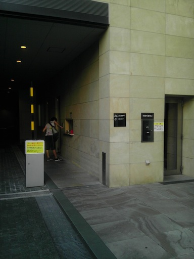

赤坂インターシティ土日祝日の入館について
土日祝日はビルの正面エントランスは閉鎖されているため、時間外通用口で手続きをして入館となります。
少しわかりづらいので、写真で順路を示します。
赤坂インターシティ外観
正面エントランス

土日は開いていません

エントランスの左側へ進む
車両入口の脇にある時間外通用口

警備室に「エムスリー株式会社（担当者：セラ）訪問」の旨、伝える

土日祝日はビルの正面エントランスは閉鎖されているため、時間外通用口で手続きをして入館となります。
少しわかりづらいので、写真で順路を示します。